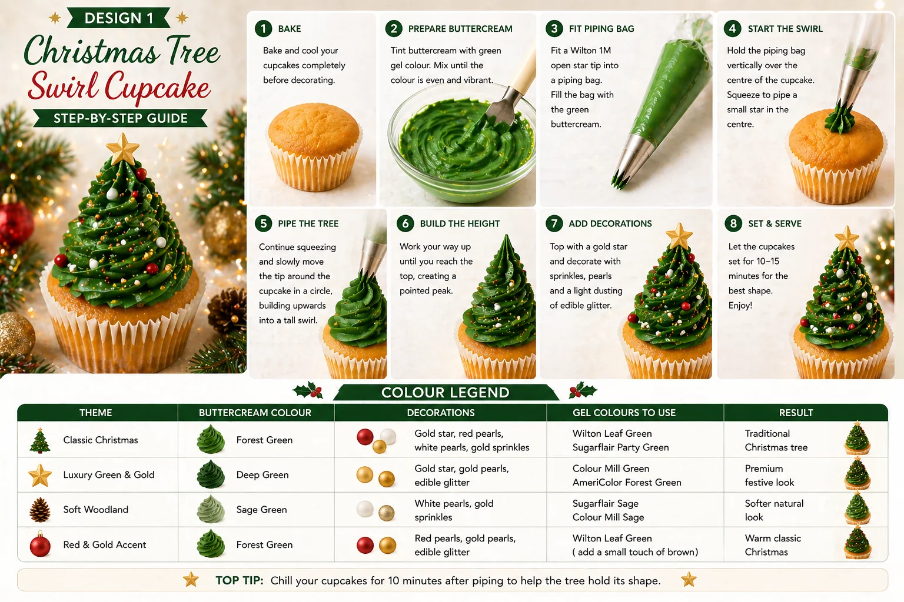
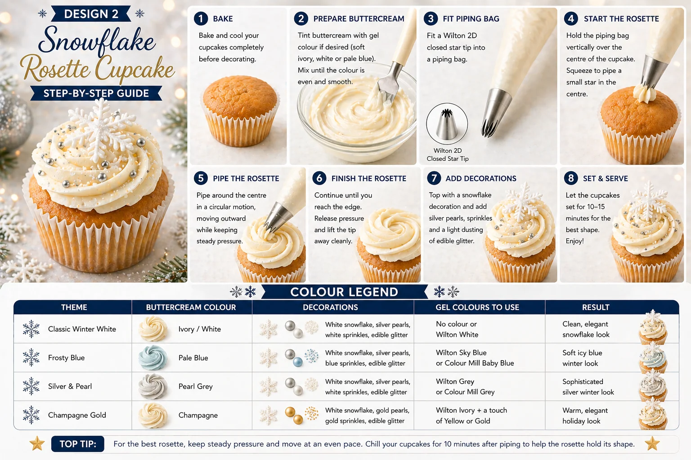

Christmas cupcakes are a lovely way to add colour, sparkle and festive detail to a party table. Whether you are planning a family gathering, a school or nursery celebration, a Christmas party, or a styled dessert table, cupcakes help pull the whole theme together.
This guide covers two easy Christmas cupcake designs that work beautifully as a pair:
- Christmas Tree Swirl Cupcakes
- Snowflake Rosette Cupcakes
Both designs are beginner-friendly, visually festive and perfect for a Christmas dessert table.
At Little Moment Studio, our focus is balloon styling and celebration setups, but we know the most beautiful parties feel coordinated from top to bottom. Balloons, backdrops, cupcakes, cake stands and table details all work together to create the final look.
We do not make cakes or cupcakes ourselves, but these ideas are designed to inspire your dessert table. If you would like cakes or cupcakes to match your balloon display, we are happy to recommend a trusted local cake maker.
Why These Two Designs
These two designs work beautifully together because they give your dessert table a mix of height, texture and elegance. The Christmas tree swirl is bold and instantly recognisable, while the snowflake rosette adds a softer winter feel.
| Design | Style | Difficulty | Best For |
|---|---|---|---|
| Christmas tree swirl | Tall, green and festive | Easy | Strong Christmas impact |
| Snowflake rosette | Soft, elegant and wintery | Easy | Premium dessert table look |
Together, they create a balanced display that works well with Christmas balloons, garlands, backdrops and table styling.
Christmas Tree Swirl Cupcakes

The Christmas tree swirl cupcake is the showstopper of the two designs. It uses green buttercream piped into a tall tree shape, finished with a gold star topper and small festive sprinkles. It looks impressive, but the method is very achievable for beginners.
What You Will Need
| Item | Purpose |
|---|---|
| Vanilla cupcakes | A simple base for decorating |
| Green buttercream | Main Christmas tree swirl |
| Piping bag | Holds the buttercream |
| Wilton 1M piping tip | Creates the tall tree-style swirl |
| Gold star toppers | Finishes the top of the tree |
| Pearl sprinkles | Creates bauble-style decoration |
| Red and gold sprinkles | Adds festive colour |
| White sanding sugar or edible glitter | Adds a snowy sparkle |
Best Piping Tip for Christmas Tree Cupcakes
Use a Wilton 1M open star tip. This creates a tall, ridged swirl that looks like the shape of a Christmas tree. It gives the buttercream definition and makes the finished cupcake look more professional without requiring advanced technique.
How to Make Christmas Tree Swirl Cupcakes
- Bake and cool the cupcakes. Let them cool completely before decorating. Warm cupcakes will soften the buttercream and cause the swirl to lose its shape.
- Prepare the green buttercream. Make a firm vanilla buttercream and colour it with green gel food colouring. Gel colour gives a stronger, deeper colour without softening the buttercream. For a classic look, use a forest green or deep green shade.
- Fill the piping bag. Fit a piping bag with the Wilton 1M tip. Fill with green buttercream, push it down towards the nozzle and twist the top to remove air pockets.
- Pipe the tree shape. Hold the piping bag upright over the cupcake. Start at the outside edge and pipe around in a circle, working inwards and upwards, building height as you go. Finish with a pointed peak at the top.
- Add decorations. Place a gold star topper on top. Decorate with pearl sprinkles, red sprinkles, gold sprinkles or a light dusting of edible glitter. A few well-placed details look more elegant than an overloaded cupcake.
- Let the cupcakes firm. Leave them for 10–15 minutes before boxing or serving so the buttercream holds its tree shape.
Colour Ideas for Christmas Tree Cupcakes
| Theme | Buttercream | Decorations | Result |
|---|---|---|---|
| Classic Christmas | Forest green | Gold star, red pearls, white pearls, gold sprinkles | Traditional Christmas tree |
| Luxury green & gold | Deep green | Gold star, gold pearls, edible glitter | Premium festive look |
| Soft woodland | Sage green | White pearls and gold sprinkles | Softer natural look |
| Red & gold accent | Forest green | Red pearls, gold pearls, edible glitter | Warm classic Christmas |
Colour Tip
If the green looks too bright, add a very small amount of brown gel colouring to deepen it. Add colour gradually — it is much easier to darken buttercream than to lighten it. Wilton Leaf Green, Sugarflair Party Green and Colour Mill Green are all reliable choices.
Snowflake Rosette Cupcakes

The snowflake rosette cupcake is softer and more elegant. It uses ivory, white or pale blue buttercream piped into a flat rosette, finished with a snowflake decoration and silver or pearl details. This design is ideal if you want a wintery, premium look alongside the bolder tree cupcakes.
What You Will Need
| Item | Purpose |
|---|---|
| Vanilla cupcakes | A simple cupcake base |
| Ivory, white or pale blue buttercream | Main rosette colour |
| Piping bag | Holds the buttercream |
| Wilton 2D piping tip | Creates the soft rosette |
| Snowflake topper or snowflake sprinkles | Main decoration |
| Silver pearls | Adds a wintery finish |
| White sanding sugar | Creates a snowy effect |
| Edible glitter | Optional sparkle |
Best Piping Tip for Snowflake Rosettes
Use a Wilton 2D closed star tip. This creates a soft, floral rosette with a flatter, more elegant finish than the tall Christmas tree swirl. The two tips together give the dessert table a pleasing contrast in shape and height.
How to Make Snowflake Rosette Cupcakes
- Bake and cool the cupcakes. Cool cupcakes are essential — warm cupcakes will cause the rosette to lose its shape.
- Prepare the buttercream. Make a firm vanilla buttercream. Leave it ivory for a classic wintery look, brighten it with white colouring, or tint it pale blue for a frosty feel.
- Fill the piping bag. Fit the Wilton 2D tip and fill the bag with your chosen buttercream. Push it down towards the nozzle and twist the top.
- Pipe the rosette. Hold the piping bag upright over the centre of the cupcake. Start in the centre and pipe a small curl, then continue spiralling outwards towards the edge. Keep the piping flat — this is a rosette, not a tall swirl. Stop squeezing before lifting the bag so the edge looks neat.
- Add the snowflake decoration. Place a fondant snowflake, ready-made topper or snowflake sprinkle on top. Add a few silver pearls, white sprinkles or edible glitter around it.
- Let the cupcakes set. Leave for 10–15 minutes before boxing or serving.
Colour Ideas for Snowflake Rosette Cupcakes
| Theme | Buttercream | Decorations | Result |
|---|---|---|---|
| Classic winter white | Ivory or white | White snowflake, silver pearls, white sprinkles | Clean, elegant snowflake look |
| Frosty blue | Pale blue | White snowflake, silver pearls, blue sprinkles | Soft icy winter look |
| Silver & pearl | Pearl grey | White snowflake, silver pearls, edible glitter | Sophisticated silver look |
| Champagne gold | Champagne ivory | White snowflake, gold pearls, edible glitter | Warm, elegant holiday look |
Piping Tip
The key difference between the two designs: for the Christmas tree swirl, start at the outside edge and build upwards. For the snowflake rosette, start in the centre and spiral outwards while keeping the piping flat. If the rosette ends up looking like a tall swirl, the bag was held too upright — angle it slightly and keep pressure light.
Displaying Christmas Cupcakes on a Dessert Table
A Christmas dessert table looks most considered when the cupcakes match the rest of the styling. Choose a tight palette of three or four colours and repeat them across the cupcakes, balloons and table decor.
- White cake stands to add height variation
- Pine branches, red berries or dried orange slices as filler
- Fairy lights woven through the table
- Gold baubles and gold or silver accents throughout
- Ivory table linen as a base
- A coordinating balloon garland behind or above the table
| Palette | Colours |
|---|---|
| Classic Christmas | Forest green, red, white and gold |
| Winter Wonderland | White, pale blue, silver and pearl |
| Natural Christmas | Sage green, ivory, brown and gold |
| Luxury Christmas | Deep green, champagne, gold and white |
| Red & gold | Red, ivory, gold and soft greenery |
Green tree cupcakes pair well with deep green and gold balloons. Snowflake cupcakes pair well with white, silver and pale blue styling. Ivory and champagne tones suit a softer luxury Christmas setup.
Suggested Cupcake Box
Box of 12:
| Quantity | Design |
|---|---|
| 6 | Christmas tree swirl cupcakes |
| 6 | Snowflake rosette cupcakes |
Box of 6:
| Quantity | Design |
|---|---|
| 3 | Christmas tree swirl cupcakes |
| 3 | Snowflake rosette cupcakes |
The tree cupcakes add height and festive colour, while the snowflake rosettes add softness and balance.
Beginner Tips for Better Results
- Use firm buttercream. If the tree swirl leans or the rosette loses shape, chill the buttercream briefly or add a little more icing sugar before piping.
- Build the tree upwards. Pipe slowly and build height with each circle. Spreading too wide at each level flattens the tree shape.
- Keep the rosette flat. For the snowflake design, start in the centre and spiral outwards while keeping pressure light. The Wilton 2D gives a flatter result than the 1M.
- Practise on baking paper first. Pipe one swirl and one rosette on paper, scrape off the buttercream and reuse it before decorating the actual cupcakes.
- Add gel colour gradually. It is easier to deepen a colour than to lighten it. Mix well after each addition before adding more.
- Keep decorations minimal. A gold star, a few pearls and a dusting of glitter will look more refined than covering the whole cupcake.
- Add tall toppers after transport. If the gold star toppers are delicate, place them once the cupcakes are at their destination rather than boxing them with toppers in place.
Your Questions Answered
Can you make Christmas cupcakes the day before?
Yes. Store them in a covered cupcake box or airtight container in a cool, dry place. Avoid long fridge storage if using fondant snowflakes or star toppers, as fondant can become sticky in a humid environment. The cupcakes can be chilled briefly to firm the buttercream, but bring them back to room temperature before serving.
How do you transport Christmas cupcakes?
Use a cupcake box with inserts so nothing moves around. The snowflake rosette cupcakes are easier to transport because they are flatter. The Christmas tree cupcakes are taller — check the box has enough height clearance. Keep cupcakes away from heat, direct sunlight and warm cars.
What if the rosette looks like a tall swirl?
The piping bag was held too upright. Angle it very slightly and keep the pressure light as you spiral outwards. The Wilton 2D tip naturally gives a flatter result than the 1M — the key is to start in the centre and spiral outwards rather than building upwards.
What if the buttercream green looks too bright?
Add a very small amount of brown gel colouring to deepen and soften the green. Mix thoroughly before adding more. Wilton Leaf Green can look quite vivid straight from the tube — a small touch of Wilton Brown or Sugarflair Dark Brown takes it to a more natural forest green.
Useful Tools
- Wilton 1M open star piping tip
- Wilton 2D closed star piping tip
- Disposable piping bags
- Green gel food colouring
- White or ivory gel colouring
- Gold star toppers
- Snowflake fondant cutter or snowflake sprinkles
- Pearl sprinkles (white and silver)
- White sanding sugar
- Edible glitter
- Cupcake boxes with inserts
The two designs work well as a pair because they contrast in shape and height. The tall green tree swirls create festive impact and height across the table, while the flat snowflake rosettes add elegance and softness. Together they make a Christmas dessert table that feels coordinated and polished without requiring a full day of preparation.
For more baby shower and birthday dessert table inspiration, see our guide to baby shower cupcake ideas.
For more seasonal cupcake designs, see our guide to Halloween cupcake ideas.
Planning a Christmas Party in Sittingbourne or Kent?
Little Moment Studio can help you create a coordinated balloon display, backdrop and colour palette for your festive celebration. We can also recommend a trusted local cake maker if you would like cupcakes or a cake to complement your dessert table.